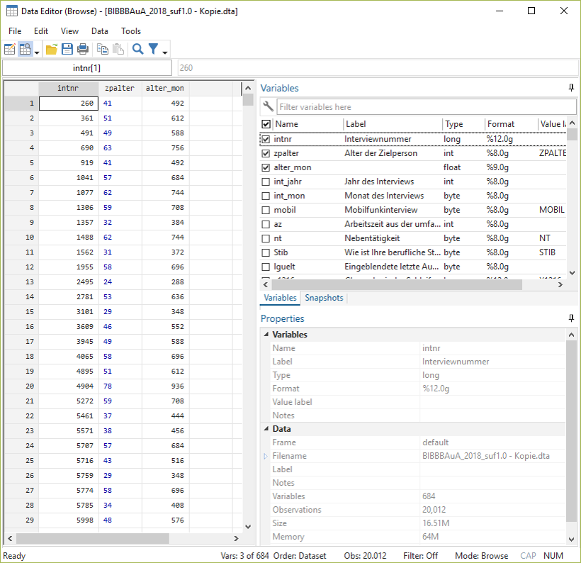

3 Arbeiten mit Datensätzen in Stata
Nachdem wir uns in Stata etwas umgesehen haben, können wir uns jetzt dem eigentlichen Arbeiten mit Datensätzen zuwenden.
cd ....
use "BIBBBAuA_2018_suf1.0.dta"3.1 Befehlsstruktur
Ganz nebenbei haben wir in Kapitel 1 bereits die ersten Stata-Befehle verwendet. Bevor wir jetzt aber tiefer einsteigen nochmal einmal allgemein:
Die grundsätzliche Struktur von Stata-Kommandos ist immer befehl variable, optionen. Zunächst geben wir also immer an, was passieren soll - bisher war das eben zum Beispiel eine Auflistung (list) einiger Variable für einige Zeilen:
list intnr Bula gkpol Stib zpalter in 11/15 | intnr Bula gkpol Stib zpalter |
|--------------------------------------------------|
11. | 1562 Berlin 500.000 Angestel 31 |
12. | 1955 Berlin 500.000 Angestel 58 |
13. | 2495 Schleswi 20.000 b Angestel 24 |
14. | 2781 Schleswi 20.000 b Angestel 53 |
15. | 3101 Schleswi 2.000 bi Angestel 29 |Wie wir schon gesehen hatten, könen wir durch das Anhängen der Option nolabel die ‘rohen’ Zahlenwerte statt der beschrifteten Ausprägungen anfordern:
list intnr Bula gkpol Stib zpalter in 11/15, nolabel | intnr Bula gkpol Stib zpalter |
|---------------------------------------|
11. | 1562 11 7 2 31 |
12. | 1955 11 7 2 58 |
13. | 2495 1 4 2 24 |
14. | 2781 1 4 2 53 |
15. | 3101 1 2 2 29 |3.1.1 Zeilenumbrüche
Kommandos in Stata sind zeilenbasiert. D.h. alles was zu einem Kommando gehört, muss in der gleichen Zeile stehen. Umgekehrt wird auch alles, was in einer Zeile steht als Teil des Kommandos verstanden. Daher werden bei list intnr Bula gkpol Stib zpalter in 11/15 auch nicht nur intnr sondern auch die anderen Variablen angezeigt.
Das funktioniert nicht:
list intnr Bula
gkpol Stib zpalter in 11/15 (Hier werden erstmal 20012 Zeilen von intnr und Bula ausgegeben)
command gkpol is unrecognized
r(199);
Mit /// können wir Zeilen verknüpfen:
list intnr Bula ///
gkpol Stib zpalter in 11/15 | intnr Bula gkpol Stib zpalter |
|---------------------------------------|
11. | 1562 11 7 2 31 |
12. | 1955 11 7 2 58 |
13. | 2495 1 4 2 24 |
14. | 2781 1 4 2 53 |
15. | 3101 1 2 2 29 |3.1.2 Kommentare
Außerdem können wir mit // Kommentare in unsere DoFiles einfügen. // blendet alles folgende am Ende der Zeile aus:
list intnr Bula gkpol Stib zpalter in 11/15 // dies ist ein kommentar/// kann auch zum Kommentieren verwendet werden:
list intnr Bula /// hier kann ein kommentar stehen
gkpol Stib zpalter in 11/15 // hier geht es weiter, aber der Befehl endet mit dieser ZeileAlternativ können wir mit * eine komplette Zeile ‘deaktivieren’:
*list intnr Bula gkpol Stib zpalter in 11/15 So wird der Befehl ignoriert.
3.2 Auszählen & Überblick erhalten
Mit tabulate bekommen wir eine Auszählung der Ausprägungen einer Variable, indem wir einfach den Variablennamen anhängen:
tabulate S1 Geschlecht | Freq. Percent Cum.
------------+-----------------------------------
männlich | 10,074 50.34 50.34
weiblich | 9,938 49.66 100.00
------------+-----------------------------------
Total | 20,012 100.00Wir sehen hier also, dass S1 zwei Ausprägungen hat und der Datensatz 10074 Männer und 9938 Frauen enthält. tabulate S1 kann auch mit tab S1 abgekürzt werden.
Auch hier können wir mit nolabel die dahinterliegenden Zahlenwerte anzeigen lassen:
tabulate S1, nolabel Geschlecht | Freq. Percent Cum.
------------+-----------------------------------
1 | 10,074 50.34 50.34
2 | 9,938 49.66 100.00
------------+-----------------------------------
Total | 20,012 100.00Für metrisch skalierte Variablen mit deutlich mehr Ausprägungen können wir tabulate zwar theoretisch auch verwenden, allerdings wird eine Tabelle hier sehr schnell sehr unübersichtlich:
(Zum Unterschied zwischen metrischen und kategorial skalierten Variablen kommen wir gleich)
tabulate zpalter Alter der |
Zielperson | Freq. Percent Cum.
-------------+-----------------------------------
15 | 1 0.00 0.00
16 | 3 0.01 0.02
17 | 6 0.03 0.05
18 | 15 0.07 0.12
19 | 36 0.18 0.30
20 | 54 0.27 0.57
21 | 86 0.43 1.00
22 | 117 0.58 1.59
23 | 134 0.67 2.26
24 | 121 0.60 2.86
25 | 129 0.64 3.51
26 | 181 0.90 4.41
27 | 228 1.14 5.55
28 | 243 1.21 6.77
29 | 285 1.42 8.19
30 | 283 1.41 9.60
31 | 337 1.68 11.29
32 | 336 1.68 12.97
33 | 382 1.91 14.88
34 | 384 1.92 16.79
35 | 439 2.19 18.99
36 | 392 1.96 20.95
37 | 406 2.03 22.98
38 | 393 1.96 24.94
39 | 394 1.97 26.91
40 | 394 1.97 28.88
41 | 379 1.89 30.77
42 | 346 1.73 32.50
43 | 419 2.09 34.59
44 | 392 1.96 36.55
45 | 467 2.33 38.89
46 | 497 2.48 41.37
47 | 551 2.75 44.12
48 | 571 2.85 46.98
49 | 689 3.44 50.42
50 | 693 3.46 53.88
51 | 679 3.39 57.28
52 | 724 3.62 60.89
53 | 786 3.93 64.82
54 | 790 3.95 68.77
55 | 743 3.71 72.48
56 | 699 3.49 75.97
57 | 756 3.78 79.75
58 | 648 3.24 82.99
59 | 608 3.04 86.03
60 | 601 3.00 89.03
61 | 528 2.64 91.67
62 | 476 2.38 94.05
63 | 335 1.67 95.72
64 | 225 1.12 96.85
65 | 142 0.71 97.56
66 | 56 0.28 97.84
67 | 49 0.24 98.08
68 | 34 0.17 98.25
69 | 44 0.22 98.47
70 | 29 0.14 98.62
71 | 23 0.11 98.73
72 | 9 0.04 98.78
73 | 11 0.05 98.83
74 | 15 0.07 98.91
75 | 14 0.07 98.98
76 | 7 0.03 99.01
77 | 7 0.03 99.05
78 | 4 0.02 99.07
79 | 2 0.01 99.08
80 | 1 0.00 99.08
81 | 5 0.02 99.11
82 | 1 0.00 99.11
83 | 1 0.00 99.12
87 | 1 0.00 99.12
keine Angabe | 176 0.88 100.00
-------------+-----------------------------------
Total | 20,012 100.00Für metrische Variablen empfiehlt sich daher summarize als Überblicksbefehl:
summarize zpaltersummarize zpalter kann auch mit su zpalter abgekürzt werden.
Hier bekommen wir die Anzahl der Beobachtungen (Obs.), das arithmetische Mittel (Mean), sowie die Minimal- und Maximalwerte ausgegeben (Min&Max). (zur Standardabweichung Std. Dev. kommen wir noch).
Variable | Obs Mean Std. Dev. Min Max
-------------+--------------------------------------------------------
zpalter | 20012 134.7157 929.2611 15 9999summarize klappt auch mit mehreren Variablen auf einmal (bei F518_SUF handelt es sich um den monatlichen Bruttoverdienst der Befragten):
summarize zpalter F518_SUF // klappt auch mit mehreren Variablen Variable | Obs Mean Std. Dev. Min Max
-------------+--------------------------------------------------------
zpalter | 20012 134.7157 929.2611 15 9999
F518_SUF | 20012 19810.74 36273.7 1 999993.3 Exkurs: Skalenniveau
Im Zusammenhang mit Alter war gerade von metrischen Variablen die Rede. Dabei geht es um das sog. Skalenniveau von Variablen und Merkmalen. Dabei geht es um den Informationsgehalt von Variablen: welche Informationen können wir aus einer Variable ablesen? Prinzipiell wird zwischen kategorialen und metrischen Skalenniveaus unterschieden. Der zentrale Unterschied besteht darin, dass bei kategorialen Variablen Zahlen_codes_ verwendet werden, wohingegen bei metrischen Variablen die Werte als tatsächliche Zahlenwerte interpretierbar sind. Innerhalb der kategorialen Merkmale wird wiederum zwischen nominaler und ordinaler Skalierung unterschieden, die metrischen Merkmale lassen sich in intervall- und ratio-skalierte Variablen unterscheiden.

Sehen wir uns das einmal für die Variablen Geschlecht (S1), Schulbildung (S3), Geburtsjahr (S2_j) und Einkommen (F518_SUF) an:
list S1 S3 S2_j F518_SUF in 1/10, nol | S1 S3 S2_j F518_SUF |
|---------------------------|
1. | 1 8 1976 99999 |
2. | 2 5 1966 1200 |
3. | 1 7 1968 3500 |
4. | 2 8 1954 4500 |
5. | 2 7 1976 99999 |
|---------------------------|
6. | 1 5 1960 3000 |
7. | 1 8 1955 2000 |
8. | 2 5 1958 1200 |
9. | 2 7 1985 3000 |
10. | 2 8 1955 2600 |list S1 S3 S2_j F518_SUF in 1/10 +-------------------------------------------+
| S1 S3 S2_j F518_SUF |
|-------------------------------------------|
1. | männlic Abitur / 1976 keine Angabe |
2. | weiblich Realschu 1966 1200 |
3. | männlic Fachhoch 1968 3500 |
4. | weiblich Abitur / 1954 4500 |
5. | weiblich Fachhoch 1976 keine Angabe |
|-------------------------------------------|
6. | männlic Realschu 1960 3000 |
7. | männlic Abitur / 1955 2000 |
8. | weiblich Realschu 1958 1200 |
9. | weiblich Fachhoch 1985 3000 |
10. | weiblich Abitur / 1955 2600 |
+-------------------------------------------+Literaturtipps:
- S.18 ff. in Diaz-Bone, R. (2019). Statistik für Soziologen (4. Auflage)
- S.12 ff. in Bortz, J., & Schuster, C. (2010). Statistik für Human- und Sozialwissenschaftler (7. Auflage) (ausführliche formale Beschreibung)
3.4 Fehlende Werte
Wenn wir uns nochmal die Variable zpalter ansehen, dann fallen unrealistisch hohe negativen Altersangaben ins Auge:
summarize zpalter Variable | Obs Mean Std. Dev. Min Max
-------------+--------------------------------------------------------
zpalter | 20012 134.7157 929.2611 15 9999Hier kann es sich natürlich nicht um Befragte mit einem Alter 9999 handeln, sondern aufgrund der fehlenden Angaben zum Geburtsdatum lässt sich für manche Befragte das Alter nicht generieren. Wie können wir das herausfinden? Beispielsweise, indem wir mit describe zpalter nachsehen, ob ein Label definiert ist und dann mit dem Befehl labelbook dieses Label aufrufen:
describe zpalter
labelbook ZPALTER storage display value
variable name type format label variable label
--------------------------------------------------------------------------------
zpalter int %8.0g ZPALTER Alter der Zielperson
--------------------------------------------------------------------------------
value label ZPALTER
--------------------------------------------------------------------------------
values labels
range: [9999,9999] string length: [12,12]
N: 1 unique at full length: yes
gaps: no unique at length 12: yes
missing .*: 0 null string: no
leading/trailing blanks: no
numeric -> numeric: no
definition
9999 keine Angabe
variables: zpalterFür Fälle ohne gültige Altersangabe wurde also 9999 als Wert in zpalter abgelegt.
Stata berücksichtigt diese Tatsache aber noch nicht, wenn bspw. die Minimal- und Maximalwerte ausgegeben werden und zeigt daher 9999 als höchste Alterangaben an.
Um das zu ändern müssen wir 9999 als missing value überschreiben. Diese missing values werden in Stata mit . abgelegt und werden dann für die Berechnung von Minimal- und Maximalwerten usw. ausgeschlossen. Um also 9999 als . zu überschreiben, können wir zB auf den replace Befehl zurückgreifen:
summarize zpalter
replace zpalter = . if zpalter == 9999
summarize zpalter Variable | Obs Mean Std. Dev. Min Max
-------------+--------------------------------------------------------
zpalter | 20012 134.7157 929.2611 15 9999
(176 real changes made, 176 to missing)
Variable | Obs Mean Std. Dev. Min Max
-------------+--------------------------------------------------------
zpalter | 19836 47.19228 11.33762 15 87Wir bekommen von Stata mitgeteilt, dass wir 176 Beobachtungen verändert und auf missing gesetzt haben. Im folgenden summarize werden diese fehlenden Werte dann ignoriert.
Ein Spezialbefehl für die Überschreibung von bestimmten Werten ist mvdecode. Mit mvdecode können wir 9999 in mehreren Variablen gleichzeitig als missing überschreiben. Zum Beispiel in S2_j, F510 und F511_j:
mvdecode S2_j F510 F511_j, mv(9999) S2_j: 73 missing values generated
F510: 89 missing values generated
F511_j: 211 missing values generated(S2_j enthält das Geburtsjahr, F510 das Jahr, seit dem der*die Befragte bem jetzigen Arbeitgeber beschäftigt ist und F511_j das Jahr, seit dem die aktuelle Tätigkeit ausgeübt wird.)
Wir können auch mit / einen Wertebereich angeben, der als Missing definiert werden soll, zB. für das Bundesland der Betriebsstätte:
mvdecode F233, mv(98/99) F233: 232 missing values generatedMit mdesc bekommen wir eine Auszählung zu fehlenden Werten. mdesc ist allerdings kein Standard-Stata-Befehl, sondern muss extra installiert werden. Das ist allerdings kein größerer Aufwand:
ssc install mdescAnschließend können wir mit mdesc die Zahl der missings in zpalter, S2_j, F510 und F511_j ausgeben lassen:
mdesc zpalter S2_j F510 F511_j Variable | Missing Total Percent Missing
----------------+-----------------------------------------------
zpalter | 176 20,012 0.88
S2_j | 73 20,012 0.36
F510 | 89 20,012 0.44
F511_j | 2,573 20,012 12.86
F233 | 0 20,012 0.00
----------------+-----------------------------------------------Hinweis: welche Angaben als Missing definiert werden sollen, ist teilweise von der Frage ab, die beantwortet werden soll. Bspw. wurden oben alle uneindeutigen Angaben in F233 zum Bundesland der Betriebsstätte als missing codiert. Je nach Fragestellung ist das eine mehr oder weniger gute Idee.
3.5 Neue Variablen erstellen
Natürlich sind wir nicht nur darauf beschränkt, bestehende Variablen anzusehen, sondern wir können auch neue Variablen erstellen. Das geht mit gen. Dazu geben wir erst den neuen Variablennamen an und nach =, wie die neue Variable bestimmt werden soll:
gen alter_mon = zpalter * 12
su zpalter Variable | Obs Mean Std. Dev. Min Max
-------------+--------------------------------------------------------
alter_mon | 20012 1616.588 11151.13 180 119988Wenn wir eine Variable überschreiben möchten, dann müssen wir diese erst mit drop löschen, bevor wir sie überschreiben. Würden wir den gen Befehl von gerade nochmal verwenden, dann bekommen wir eine Fehlermeldung:
gen alter_mon = zpalter * 12Wir müssen den Namen age_mon also erst wieder frei machen, dann funktioniert der Befehl auch:
drop alter_mon
gen alter_mon = zpalter * 12Eine weiteren Option, neue Variablen zu erstellen ist egen “Extensions to generate.” Hier stehen dann eine ganze Menge an Funktionen zur Verfügung. Wir werden beispielsweise Optionen zur Einteilung in Gruppen (cut) kennenlernen.
So könnten wir bspw. eine Variable age_mean mit dem Mittelwert für age erstellen:
egen age_mean = mean(age)Eine Liste aller Optionen für egen findet sich unter help egen.
3.6 Bestehende Variablen verändern
Alternativ können wir auch mit replace explizit eine bestehende Variable überschreiben:
replace age_mon = age * 12Hier können wir aber nur bestehende Variablen ansprechen, sonst bekommen wir auch hier eine Fehlermeldung:
replace age_mon12 = age * 12variable age_mon12 not found
r(111);
end of do-file
r(111);3.7 gen ist gut, Kontrolle ist besser
Wie gerade gesehen gibt uns Stata aber keinerlei Erfolgsmeldungen. Nach der Bearbeitung oder Neuurstellung von Variablen sollte ein Blick in die Daten folgen. Dazu empfiehlt es sich, wieder auf den browse Befehl zurückzugreifen:
browse intnr zpalter alter_mon 
3.8 keep & drop
Manchmal möchten wir nur bestimmte Beobachtungen im Datensatz behalten. Beispielsweise möchten wir für eine Analyse nur Befragte mit einem Einkommen über 1500 EUR im Datensatz behalten. Dazu können wir keep oder drop die gewünschten Fälle behalten bzw. die ungewünschten ausschließen:
use Allbus2018.dta
keep if F518_SUF >= 1500
d,s(2358 observations deleted)
Contains data from D:\Datenspeicher\BIBB_BAuA/BIBBBAuA_2018_suf1.0.dta
obs: 17,654
vars: 683 2 Nov 2021 17:34
size: 15,200,094
Sorted by: intnr
Note: dataset has changed since last saveduse BIBBBAuA_2018_suf1.0.dta
drop if F518_SUF < 1500
d,s(2358 observations deleted)
Contains data from D:\Datenspeicher\BIBB_BAuA/BIBBBAuA_2018_suf1.0.dta
obs: 17,654
vars: 683 2 Nov 2021 17:34
size: 15,200,094
Sorted by: intnr
Note: dataset has changed since last savedHinweis: wenn die negativen Werte für inc bereits als Missing überschrieben sind, verbleiben diese Fälle im Datensatz! Sie werden als unendlich groß erkannt! - siehe hier
3.9 if Bedingungen und fehlende Werte
Eine häufige Fehlerquelle bei fehlende Werten in Stata ist deren Verhältnis zu >. Fehlende Werte werden nämlich von Stata als “unendlich groß” gewertet! Wenn wir uns Befragte mit einem Alter über 92 ausgeben lassen, dann bekommen wir auch diejenigen ohne Altersangabe ausgegegeben:
list sex land age if age > 92 +---------------------------+
| sex land age |
|---------------------------|
126. | MANN SACHSEN 94 |
322. | FRAU RHEINLAND-PF . |
353. | MANN NORDRHEIN-WE 94 |
556. | FRAU NORDRHEIN-WE . |
1342. | FRAU NORDRHEIN-WE . |
|---------------------------|
2135. | FRAU BRANDENBURG . |
3130. | MANN HESSEN . |
3299. | MANN RHEINLAND-PF 95 |
+---------------------------+Es gibt zwei Möglichkeiten, dies zu umgehen:
- entweder wir verwenden
inrange- wobei wir hier eine Obergrenze angeben müssen und außerdem die Untergrenze immer mit eingeschlossen wird. Wenn wir also nur Fälle sehen wollen, die älter als 92 sind, dann müssen wir einen Wert über 92 angeben:
list sex land age if inrange(age,92.1,100) +---------------------------+
| sex land age |
|---------------------------|
126. | MANN SACHSEN 94 |
353. | MANN NORDRHEIN-WE 94 |
3299. | MANN RHEINLAND-PF 95 |
+---------------------------+- oder wir hängen den
missing()-Operator an die Bedingung an. Wenn wir diesen mit Hilfe eines!verneinen, bekommen wir nur nicht-fehlende Fälle ausgegeben:
list sex land age if age > 92 & !missing(age) +---------------------------+
| sex land age |
|---------------------------|
126. | MANN SACHSEN 94 |
353. | MANN NORDRHEIN-WE 94 |
3299. | MANN RHEINLAND-PF 95 |
+---------------------------+3.10 Labels und if-Bedingungen
Genauso könnten wir auch vorgehen wenn wir nur männliche oder weibliche Befragte im Datensatz behalten möchten. Hier nochmal die Auszählung der Variable sex:
tabulate sexvariable sex not found
r(111);
end of do-file
r(111);Allerdings sind MANN und FRAU lediglich Variablenlabels. D.h. hier wurden Zahlencodes wieder mit Beschreibungen assoziiert. Wir können diese Labels nicht für if-Bedingungen verwenden:
keep if sex == "FRAU"type mismatch r(109);
Im Hintergrund ist sex nämlich eine numerische Variable
describe sexvariable sex not found
r(111);
end of do-file
r(111);Unter value label sehen wir, dass hier das Label sex angefügt wurde.
Wir können die eigentlichen Werte in tabulate mit der Option ,nol ausblenden:
tabulate S1, nol Geschlecht | Freq. Percent Cum.
------------+-----------------------------------
männlich | 10,074 50.34 50.34
weiblich | 9,938 49.66 100.00
------------+-----------------------------------
Total | 20,012 100.00Wenn wir also nach Frauen filtern möchten, müssen wir den entsprechenden Zahlencode angeben:
keep if sex == 2Mehr zu labels hier
3.11 Nochmal von vorne: Daten neu laden
Variable gelöscht, die doch nötig ist? Falsch recodiert? Das ist zwar ärgerlich, aber ein riesen Vorteil der DoFile-basierten Datenarbeit mit Stata ist die Reproduzierbarkeit. Wir können einfach nochmal von vorne anfangen. Dazu lesen wir die Original-Daten einfach erneut mit use ein. Allerdings ist dann eine Besonderheit zu beachten:
use "BIBBBAuA_2018_suf1.0.dta"no; dataset in memory has changed since last saved
Wir müssen erst den existierenden Datensatz mit clear löschen
clear
use "BIBBBAuA_2018_suf1.0.dta"oder die clear Option für use verwenden:
use "BIBBBAuA_2018_suf1.0.dta", clear3.12 Speichern
Natürlich können wir unsere Daten auch abspeichern, wenn alles wie gewünscht geklappt hat. Dafür gibt es den Befehl save, der analog zu use funktioniert. Wenn wir allerdings einfach wieder den Original-Datensatznamen angeben und in der Zwischenzeit Variablen erstellt oder gelöscht haben, dann bekommen wir folgende Fehlermeldung:
cd ...
save "BIBBBAuA_2018_suf1.0.dta"file BIBBBAuA_2018_suf1.0.dta already exists
r(602);
Wir geben also entweder einen anderen Dateinamen an:
save "BIBBBAuA_2018_suf1.0_NEU.dta"Wir können aber auch mit der Option replace explizit mitteilen, dass die Datei überschrieben werden soll:
save "BIBBBAuA_2018_suf1.0.dta", replaceAchtung: Damit sind die Originaldaten aber natürlich weg.
3.13 Übungen 2
- Laden Sie den Datensatz
Allbus2018in Stata.- In welcher Variable ist das Geburtsjahr der Befragten abgelegt?
- Nutzen Sie
summarizefür einen Überblick für diese Variable. Hat die Variable zum Geburtsjahr negative Werte, die Sie mit.ersetzen sollten? (Denken Sielabelbook) - Überschreiben Sie diese negativen Werte mit
., um sie so Stata kenntlich zu machen. - Erstellen Sie eine neue Variable mit dem Alter der Befragten im Jahr 2020!
- Lassen Sie sich das Geburtsjahr und die neu erstellte Variable für die ersten 20 Beobachtungen anzeigen - hat alles geklappt wie es soll?
- Wählen Sie alle Befragten aus, die nach 1960 geboren wurden und löschen Sie alle anderen aus dem Speicher. (Siehe Kap 1.8)
- Wie viele Spalten hat der Datensatz nach dieser Veränderung? Wie viele Zeilen?
- Sind die Befragten mit fehlenden Geburtsjahrangaben noch im Datensatz? Nutzen Sie
mdesc!
- Laden Sie den Datensatz
Allbus2018.dtaerneut in Stata.- Lassen Sie sich mit Hilfe von
tabulatedie Variablegkpolanzeigen. - Lassen Sie sich die Zahlencodes anstelle der Labels anzeigen.
- Überschreiben Sie alle Codes für fehlende Angaben mit
.(Denken Sie wieder anlabelbookoder sehen Sie Codebuch nach). - Lassen Sie sich mit
tabulatedie Häufigkeitsauszählung erneut anzeigen. Hat sich die Fallzahl vorhin verändert? - Wie können Sie die fehlenden Werte auch in
tabulateauszählen lassen? Lassen Sie sich diese Auszählung anzeigen! - Löschen Sie alle Beobachtungen von Befragten aus Städten mit 500.000 Einwohnern und mehr aus dem Speicher. Denken Sie an die Unterscheidung zwischen Labels und Zahlenwerten.
- Kontrollieren Sie mit einem erneuten
tabulate-Befehl, ob alle Fälle weg sind. (Denken Sie an die fehlenden Werte!)
- Lassen Sie sich mit Hilfe von
- Kommentieren Sie ihre bisherigen Befehle mit
//! Was haben Sie jeweils gemacht? Probieren Sie auch aus, mit///einen Befehl über mehrere Zeilen zu verteilen!
3.14 Profi-Übungen 2
Für alle, die noch etwas mehr machen möchten:
- Laden Sie den Datensatz
Allbus2018erneut in Stata.- Behalten Sie nur die Befragten, die zwischen 1970 und 1980 geboren wurden im Speicher!
- Wie hilft Ihnen
inrangehier weiter? (Siehe Kap 1.8)